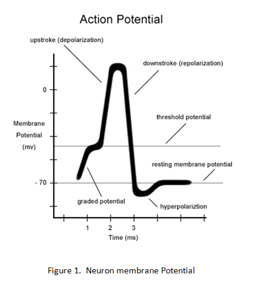
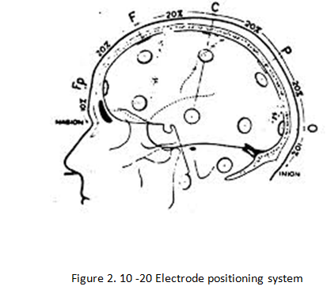
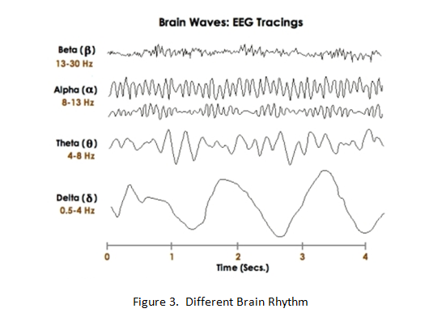

Biotechnology & Biomedical Engineering →Biomedical and Signal processing Laboratory →List Of Experiments
To simulate Electroencephalogram Signal
History of EEG
The neural activity of the human brain starts between the 17th and 23rd week of prenatal development. It is believed that from this early stage and throughout life electrical signals generated by the brain represent not only the brain function but also the status of the whole body. This assumption provides the motivation to apply advanced digital signal processing methods to the electroencephalogram (EEG) signals measured from the brain of a human subject.
What is EEG?
The electroencephalogram (EEG) is a unique and valuable measure of the brain’s electrical function. It is a graphic display of a difference in voltages from two sites of brain function recorded over time. Electroencephalography (EEG) involves the study of recording these electrical signals that are generated by the brain.
Understanding of neuronal functions and neurophysiological properties of the brain together with the mechanisms underlying the generation of signals and their recordings is, however, vital for those who deal with these signals for detection, diagnosis, and treatment of brain disorders and the related diseases.
We need to understand the neuronal functions and neurophysiological properties of the brain together with the mechanisms underlying the generation of signals and their recordings. It is, however, vital for those who deal with these signals for detection, diagnosis, and treatment of brain disorders and the related diseases.
Neural Activities
The Central Nervous System (CNS) generally consists of nerve cells and glia cells, which are located between neurons. Each nerve cell consists of axons, dendrites, and cell bodies. Nerve cells respond to stimuli and transmit information over long distances.
A nerve cell body has a single nucleus and contains most of the nerve cell metabolism, especially which related to protein synthesis. The proteins created in the cell body are delivered to other parts of the nerve. An axon is a long cylinder, which transmits an electrical impulse and can be several meters long in vertebrates (giraffe axons go from the head to the tip of the spine). In humans the length can be a percentage of a millimeter to more than a meter. An axonal transport system for delivering proteins to the ends of the cell exists and the transport system has ‘molecular motors’, which ride upon tubulin rails.
Dendrites are connected to either the axons or dendrites of other cells and receive impulses from other nerves or relay the signals to other nerves. In the human brain each nerve is connected to approximately 10,000 other nerves, mostly through dendrite connections.
Activities in CNS
The activities in the CNS are mainly related to the synaptic currents transferred between the junctions (called synapses) of axons and dendrites, or dendrites and dendrites of cells. A potential of 60–70 mV with negative polarity may be recorded under the membrane of the cell body. This potential changes with variations in synaptic activities. If an action potential travels along the fibre, which ends in an excitatory synapse, an excitatory post-synaptic potential (EPSP) occurs in the following neuron. If two action potentials travel along the same fibre over a short distance, there will be a summation of EPSPs producing an action potential on the postsynaptic neuron providing a certain threshold of membrane potential is reached. If the fibre ends in an inhibitory synapse, then hyper polarization will occur, indicating an inhibitory postsynaptic potential (IPSP).
Following the generation of an IPSP, there is an overflow of cations from the nerve cell or an inflow of anions into the nerve cell. This flow ultimately causes a change in potential along the nerve cell membrane. The portion of these currents that flow through the extra cellular space is directly responsible for the generation of field potentials. These field potentials, usually with less than 100 Hz frequency, are called EEGs when there are no changes in the signal average and DC if there are slow drifts in the average signals, which may mask the actual EEG signals. A combination of EEG and DC potentials is often observed for some abnormalities in the brain such as seizure (induced by pentylenetetrazol), hypercapnia, and asphyxia.
Action Potentials
The information transmitted by a nerve is called an action potential (AP). APs are caused by an exchange of ions across the neuron membrane and an AP is a temporary change in the membrane potential that is transmitted along the axon. It is usually initiated in the cell body and normally travels in one direction. The membrane potential depolarizes (becomes more positive), producing a spike. After the peak of the spike the membrane repolarizes (becomes more negative). The potential becomes more negative than the resting potential and then returns to normal. The action potentials of most nerves last between 5 and 10 milliseconds.
The conduction velocity of action potentials lies between 1 and 100 m/s. APs are initiated by many different types of stimuli; sensory nerves respond to many types of stimuli, such as chemical, light, electricity, pressure, touch, and stretching. On the other hand, the nerves within the CNS (brain and spinal cord) are mostly stimulated by chemical activity at synapses.
A stimulus must be above a threshold level to set off an AP. Very weak stimuli cause a small local electrical disturbance, but do not produce a transmitted AP. As soon as the stimulus strength goes above the threshold, an action potential appears and travels down the nerve. The potentials generated by neuron are as shown in Fig. 1.

Steps in AP Generation in Human Brain
1. When the dendrites of a nerve cell receive the stimulus the Na+ channels will open. If the opening is sufficient to drive the interior potential from −70 mV up to −55 mV, the process continues.
2. As soon as the action threshold is reached, additional Na+ channels (sometimes called voltage-gated channels) open. The Na+ influx drives the interior of the cell membrane up to approximately +30 mV. The process to this point is called depolarization.
3. Then Na+ channels close and the K+ channels open. Since the K+ channels are much slower to open, the depolarization has time to be completed. Having both Na+ and K+ channels open at the same time would drive the system towards neutrality and prevent the creation of the action potential.
4. Having the K+ channels open, the membrane begins to repolarize back towards its rest potential.
5. The repolarization typically overshoots the rest potential to a level of approximately −90 mV. This is called hyper polarization and would seem to be counterproductive, but it is actually important in the transmission of information. Hyper polarization prevents the neuron from receiving another stimulus during this time, or at least raises the threshold for any new stimulus. Part of the importance of hyper polarization is in preventing any stimulus already sent up an axon from triggering another action potential in the opposite direction. In other words, hyper polarization ensures that the signal is proceeding in one direction.
6. After hyper polarization, the Na+/K+ pumps eventually bring the membrane back to its resting state of −70 mV.
EEG Generation
An EEG signal is a measurement of currents that flow during synaptic excitations of the dendrites of many pyramidal neurons in the cerebral cortex. When brain cells (neurons) are activated, the synaptic currents are produced within the dendrites. This current generates a magnetic field measurable by electromyogram (EMG) machines and a secondary electrical field over the scalp measurable by EEG systems.
The human head consists of different layers including the scalp, skull, brain and many other thin layers in between. The skull attenuates the signals approximately one hundred times more than the soft tissue. On the other hand, most of the noise is generated either within the brain (internal noise) or over the scalp (system noise or external noise). Therefore, only large populations of active neurons can generate enough potential to be recordable using the scalp electrodes. These signals are later amplified greatly for display purposes. Approximately 1011 neurons are developed at birth when the central nervous system (CNS) becomes complete and functional. This makes an average of 104 neurons per cubic mm. Neurons are interconnected into neural nets through synapses. Adults have approximately 5*1014 synapses. The number of synapses per neuron increases with age, whereas the number of neurons decreases with age. From an anatomical point of view the brain may be divided into three parts: the cerebrum, cerebellum, and brain stem. The cerebrum consists of both left and right lobes of the brain with highly convoluted surface layers called the cerebral cortex.
The cerebrum includes the regions for movement initiation, conscious awareness of sensation, complex analysis, and expression of emotions and behavior. The cerebellum coordinates voluntary movements of muscles and maintains balance. The brain stem controls involuntary functions such as respiration, heart regulation, biorhythms, and neurohormone and hormone sections.
EEG Recording and Measurement
The EEG recording electrodes and their proper function are crucial for acquiring high quality data. Different types of electrodes are often used in the EEG recording systems, such as:
* Disposable (gel-less, and pre-gelled types)
* Reusable disc electrodes (gold, silver, stainless steel, or tin)
* Headbands and electrode caps
* Saline-based electrodes
* Needle electrodes
For multichannel recordings with a large number of electrodes, electrode caps are often used. Commonly used scalp electrodes consist of Ag–AgCl disks, less than 3 mm in diameter, with long flexible leads that can be plugged into an amplifier. Needle electrodes are those that have to be implanted under the skull with minimal invasive operations. High impedance between the cortex and the electrodes as well as the electrodes with high impedances can lead to distortion, which can even mask the actual EEG signals.
10-20 Electrode Positioning
The 10–20 system avoids both eyeball placement and considers some constant distances by using specific anatomic landmarks from which the measurement would be made and then uses 10 or 20% of that specified distance as the electrode interval. The odd electrodes are on the left and the even ones on the right.

Fp: Frontopolar
F: Frontal
T: Temporal
O: Occipital
C: Central
P: Parietal
A: Ear Lobe
Brain Rhythms
Many brain disorders are diagnosed by visual inspection of EEG signals. The clinical experts in the field are familiar with manifestation of brain rhythms in the EEG signals. In healthy adults, the amplitudes and frequencies of such signals change from one state of a human to another, such as wakefulness and sleep. The characteristics of the waves also change with age. There are five major brain waves distinguished by their different frequency ranges. These frequency bands from low to high frequencies respectively are called delta (δ), theta (θ), alpha (α), beta (β) and gamma (γ).

* Delta – refers to frequencies below 4 Hz. Delta activity, which is the slowest waveform, is normal when present in adults during sleep. In normal elderly subjects, delta activity is sometimes seen in the temporal regions during wakefulness, and in a generalized distribution, maximal anteriorly, during drowsiness. It is usually abnormal under other circumstances.
* Theta – ranges from 4 Hz to less than 8 Hz. It is often present diffusely in children and young adults during wakefulness, whereas in adults it occurs predominantly during drowsiness. Like delta activity, theta activity may occur in the temporal regions in normal elderly adults during wakefulness.
* Alpha – ranges from 8 to 13 Hz. Alpha waves appear in the posterior half of the head and are usually found over the occipital region of the brain. They can be detected in all parts of posterior lobes of the brain. Alpha waves have been thought to indicate both a relaxed awareness without any attention or concentration.
* Beta – above 13 Hz. This activity is usually most prominent anteriorly and is often increased during drowsiness and in patients receiving sedating medication, particularly barbiturates or benzodiazepines. Rhythmical beta activity is encountered mainly over the frontal and central regions.
* Gamma – correspond to the frequencies above 30 Hz (mainly up to 45 Hz, sometimes called the fast beta wave). Although the amplitudes of these rhythms are very low and their occurrence is rare, detection of these rhythms can be used for confirmation of certain brain diseases. The regions of high EEG frequencies and highest levels of cerebral blood flow (as well as oxygen and glucose uptake) are located in the frontocentral area. The gamma wave band has also been proved to be a good indication of event-related synchronization (ERS) of the brain and can be used to demonstrate the locus for right and left index finger movement, right toes, and the rather broad and bilateral area for tongue movement.
Applications
The study of EEG is very much in need for diagnosis of many neurological disorders and other abnormalities in the human body. The acquired EEG signals from a human (and also from animals) may be used for investigation of the following clinical problems:
* Monitoring alertness, coma, and brain death
* Locating areas of damage following head injury, stroke, and tumor
* Testing afferent pathways (by evoked potentials)
* Monitoring cognitive engagement (alpha rhythm)
* Producing biofeedback situations
* Controlling anesthesia depth (servo anesthesia)
* Investigating epilepsy and locating seizure origin
* Testing epilepsy drug effects
* Assisting in experimental cortical excision of epileptic focus
* Monitoring the brain development
* Testing drugs for convulsive effects
* Investigating sleep disorders and physiology
* Investigating mental disorders Providing a hybrid data recording system together with other imaging modalities.